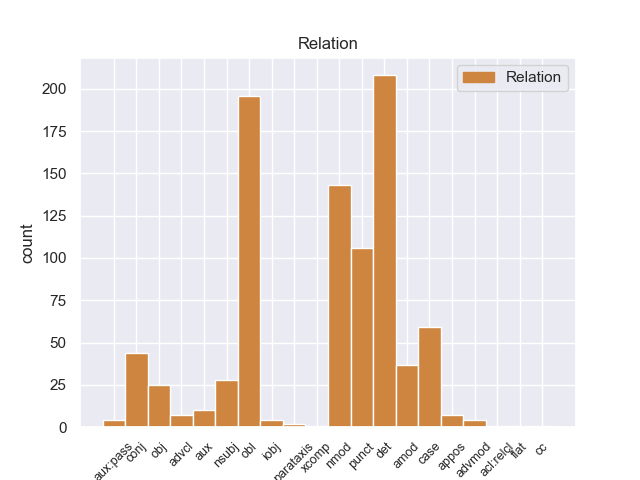
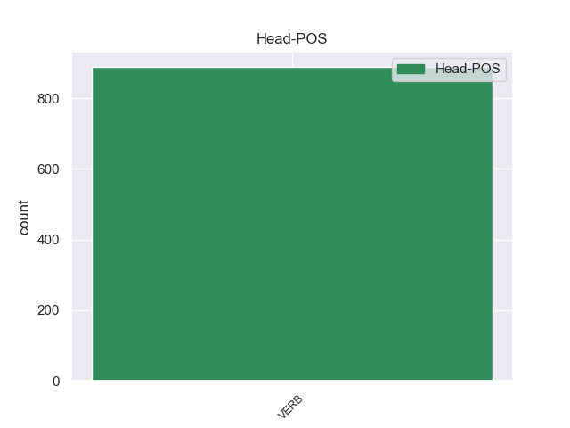
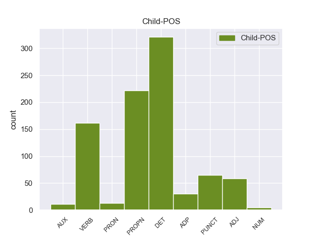

Distribution of features within this leaf



Agreement Rules sorted by frequency.
When the head token is VERB and the dependent token is DET.
1 Las _ _ _ _ 0 _ _ _
2 obras _ _ _ _ 0 _ _ _
3 cuentan _ _ _ _ 0 _ _ _
4 inicialmente _ _ _ _ 0 _ _ _
5 con _ _ _ _ 0 _ _ _
6 un _ _ _ _ 0 _ _ _
7 presupuesto _ _ _ _ 0 _ _ _
8 que _ _ _ _ 0 _ _ _
9 supera _ _ _ _ 0 _ _ _
10 los _ _ _ _ 0 _ _ _
11 ocho _ _ _ _ 0 _ _ _
12 millones _ _ _ _ 0 _ _ _
13 de _ _ _ _ 0 _ _ _
14 euros _ _ _ _ 0 _ _ _
15 y _ _ _ _ 0 _ _ _
16 , _ _ _ _ 0 _ _ _
17 por _ _ _ _ 0 _ _ _
18 el _ _ _ _ 0 _ _ _
19 momento _ _ _ _ 0 _ _ _
20 , _ _ _ _ 0 _ _ _
21 el _ _ _ _ 0 _ _ _
22 proyecto _ _ _ _ 0 _ _ _
23 ha ha DET _ Mood=Ind|Number=Sing|Person=3|Tense=Pres|VerbForm=Fin 25 cc _ _
24 sido _ _ _ _ 0 _ _ _
25 remitido remitido VERB _ Gender=Masc|Number=Sing 0 _ _ _
26 a _ _ _ _ 0 _ _ _
27 el _ _ _ _ 0 _ _ _
28 Ayuntamiento _ _ _ _ 0 _ _ _
29 de _ _ _ _ 0 _ _ _
30 Sueca _ _ _ _ 0 _ _ _
31 para _ _ _ _ 0 _ _ _
32 su _ _ _ _ 0 _ _ _
33 exposición _ _ _ _ 0 _ _ _
34 pública _ _ _ _ 0 _ _ _
35 . _ _ _ _ 0 _ _ _
When the head token is VERB and the dependent token is DET. and the head token is VERB and the dependent token is PROPN.
1 Más _ _ _ _ 0 _ _ _
2 tarde _ _ _ _ 0 _ _ _
3 en _ _ _ _ 0 _ _ _
4 1960 _ _ _ _ 0 _ _ _
5 , _ _ _ _ 0 _ _ _
6 The _ _ _ _ 0 _ _ _
7 Boss _ _ _ _ 0 _ _ _
8 fue _ _ _ _ 0 _ _ _
9 enviada _ _ _ _ 0 _ _ _
10 a _ _ _ _ 0 _ _ _
11 el _ _ _ _ 0 _ _ _
12 espacio _ _ _ _ 0 _ _ _
13 en _ _ _ _ 0 _ _ _
14 una _ _ _ _ 0 _ _ _
15 misión _ _ _ _ 0 _ _ _
16 cuyo _ _ _ _ 0 _ _ _
17 propósito _ _ _ _ 0 _ _ _
18 era _ _ _ _ 0 _ _ _
19 estudiar _ _ _ _ 0 _ _ _
20 como _ _ _ _ 0 _ _ _
21 el _ _ _ _ 0 _ _ _
22 cuerpo _ _ _ _ 0 _ _ _
23 humano _ _ _ _ 0 _ _ _
24 se _ _ _ _ 0 _ _ _
25 adaptaba adaptaba VERB _ Gender=Masc|Number=Sing 0 _ _ _
26 a _ _ _ _ 0 _ _ _
27 las _ _ _ _ 0 _ _ _
28 condiciones _ _ _ _ 0 _ _ _
29 extremas extremas PROPN _ Gender=Fem|Number=Sing 25 nmod _ _
30 . _ _ _ _ 0 _ _ _
When the head token is VERB and the dependent token is DET. and the head token is VERB and the dependent token is PROPN. and the head token is VERB and the dependent token is VERB.
1 Jazmin _ _ _ _ 0 _ _ _
2 es _ _ _ _ 0 _ _ _
3 todo _ _ _ _ 0 _ _ _
4 lo _ _ _ _ 0 _ _ _
5 contrario _ _ _ _ 0 _ _ _
6 , _ _ _ _ 0 _ _ _
7 es _ _ _ _ 0 _ _ _
8 tímida _ _ _ _ 0 _ _ _
9 y _ _ _ _ 0 _ _ _
10 callada _ _ _ _ 0 _ _ _
11 , _ _ _ _ 0 _ _ _
12 pero _ _ _ _ 0 _ _ _
13 siempre _ _ _ _ 0 _ _ _
14 es _ _ _ _ 0 _ _ _
15 arrastrada _ _ _ _ 0 _ _ _
16 por _ _ _ _ 0 _ _ _
17 las _ _ _ _ 0 _ _ _
18 locuras locuras VERB _ Gender=Fem|Number=Sing 0 _ _ _
19 y _ _ _ _ 0 _ _ _
20 travesuras travesuras VERB _ Gender=Fem|Number=Sing 18 nmod _ _
21 que _ _ _ _ 0 _ _ _
22 inventa _ _ _ _ 0 _ _ _
23 Alma _ _ _ _ 0 _ _ _
24 . _ _ _ _ 0 _ _ _
When the head token is VERB and the dependent token is DET. and the head token is VERB and the dependent token is PROPN. and the head token is VERB and the dependent token is VERB. and the head token is VERB and the dependent token is PUNCT.
1 Así _ _ _ _ 0 _ _ _
2 , _ _ _ _ 0 _ _ _
3 si _ _ _ _ 0 _ _ _
4 por _ _ _ _ 0 _ _ _
5 ejemplo _ _ _ _ 0 _ _ _
6 queremos _ _ _ _ 0 _ _ _
7 valorar valorar VERB _ Gender=Masc|Number=Sing 0 _ _ _
8 la _ _ _ _ 0 _ _ _
9 eficacia _ _ _ _ 0 _ _ _
10 de _ _ _ _ 0 _ _ _
11 un _ _ _ _ 0 _ _ _
12 anuncio _ _ _ _ 0 _ _ _
13 televisivo _ _ _ _ 0 _ _ _
14 para _ _ _ _ 0 _ _ _
15 evitar _ _ _ _ 0 _ _ _
16 los _ _ _ _ 0 _ _ _
17 accidentes _ _ _ _ 0 _ _ _
18 de _ _ _ _ 0 _ _ _
19 tráfico _ _ _ _ 0 _ _ _
20 , _ _ _ _ 0 _ _ _
21 los _ _ _ _ 0 _ _ _
22 factores _ _ _ _ 0 _ _ _
23 pronósticos _ _ _ _ 0 _ _ _
24 serían _ _ _ _ 0 _ _ _
25 muy _ _ _ _ 0 _ _ _
26 variados _ _ _ _ 0 _ _ _
27 ( _ _ _ _ 0 _ _ _
28 edad _ _ _ _ 0 _ _ _
29 , _ _ _ _ 0 _ _ _
30 sexo _ _ _ _ 0 _ _ _
31 , _ _ _ _ 0 _ _ _
32 raza _ _ _ _ 0 _ _ _
33 , _ _ _ _ 0 _ _ _
34 grupo _ _ _ _ 0 _ _ _
35 cultural _ _ _ _ 0 _ _ _
36 , _ _ _ _ 0 _ _ _
37 conducir _ _ _ _ 0 _ _ _
38 con _ _ _ _ 0 _ _ _
39 o _ _ _ _ 0 _ _ _
40 sin _ _ _ _ 0 _ _ _
41 licencia _ _ _ _ 0 _ _ _
42 , _ _ _ _ 0 _ _ _
43 etc. _ _ _ _ 0 _ _ _
44 ) ) PUNCT _ Gender=Masc|Number=Sing 7 punct _ _
45 a _ _ _ _ 0 _ _ _
46 el _ _ _ _ 0 _ _ _
47 igual _ _ _ _ 0 _ _ _
48 que _ _ _ _ 0 _ _ _
49 los _ _ _ _ 0 _ _ _
50 gradientes _ _ _ _ 0 _ _ _
51 presentes _ _ _ _ 0 _ _ _
52 ( _ _ _ _ 0 _ _ _
53 antigüedad _ _ _ _ 0 _ _ _
54 en _ _ _ _ 0 _ _ _
55 la _ _ _ _ 0 _ _ _
56 licencia _ _ _ _ 0 _ _ _
57 , _ _ _ _ 0 _ _ _
58 nivel _ _ _ _ 0 _ _ _
59 cultural _ _ _ _ 0 _ _ _
60 , _ _ _ _ 0 _ _ _
61 duración _ _ _ _ 0 _ _ _
62 de _ _ _ _ 0 _ _ _
63 la _ _ _ _ 0 _ _ _
64 conducción _ _ _ _ 0 _ _ _
65 , _ _ _ _ 0 _ _ _
66 etc. _ _ _ _ 0 _ _ _
67 ) _ _ _ _ 0 _ _ _
68 . _ _ _ _ 0 _ _ _
When the head token is VERB and the dependent token is DET. and the head token is VERB and the dependent token is PROPN. and the head token is VERB and the dependent token is VERB. and the head token is VERB and the dependent token is PUNCT. and the head token is VERB and the dependent token is ADJ.
1 Muchos _ _ _ _ 0 _ _ _
2 críticos _ _ _ _ 0 _ _ _
3 modernos _ _ _ _ 0 _ _ _
4 han _ _ _ _ 0 _ _ _
5 señalado _ _ _ _ 0 _ _ _
6 que _ _ _ _ 0 _ _ _
7 el _ _ _ _ 0 _ _ _
8 juego _ _ _ _ 0 _ _ _
9 es _ _ _ _ 0 _ _ _
10 muy _ _ _ _ 0 _ _ _
11 lento _ _ _ _ 0 _ _ _
12 para _ _ _ _ 0 _ _ _
13 los _ _ _ _ 0 _ _ _
14 estándares _ _ _ _ 0 _ _ _
15 contemporáneos _ _ _ _ 0 _ _ _
16 e _ _ _ _ 0 _ _ _
17 implica _ _ _ _ 0 _ _ _
18 mucho _ _ _ _ 0 _ _ _
19 más _ _ _ _ 0 _ _ _
20 tiempo _ _ _ _ 0 _ _ _
21 en _ _ _ _ 0 _ _ _
22 la _ _ _ _ 0 _ _ _
23 búsqueda _ _ _ _ 0 _ _ _
24 de _ _ _ _ 0 _ _ _
25 batallas _ _ _ _ 0 _ _ _
26 aleatorias aleatorias ADJ _ Gender=Masc|Number=Sing 39 obl _ _
27 para _ _ _ _ 0 _ _ _
28 incrementar _ _ _ _ 0 _ _ _
29 los _ _ _ _ 0 _ _ _
30 niveles _ _ _ _ 0 _ _ _
31 de _ _ _ _ 0 _ _ _
32 experiencia _ _ _ _ 0 _ _ _
33 y _ _ _ _ 0 _ _ _
34 dinero _ _ _ _ 0 _ _ _
35 que _ _ _ _ 0 _ _ _
36 el _ _ _ _ 0 _ _ _
37 que _ _ _ _ 0 _ _ _
38 se _ _ _ _ 0 _ _ _
39 dedica dedica VERB _ Gender=Masc|Number=Sing 0 _ _ _
40 a _ _ _ _ 0 _ _ _
41 explorar _ _ _ _ 0 _ _ _
42 y _ _ _ _ 0 _ _ _
43 resolver _ _ _ _ 0 _ _ _
44 acertijos _ _ _ _ 0 _ _ _
45 . _ _ _ _ 0 _ _ _
When the head token is VERB and the dependent token is DET. and the head token is VERB and the dependent token is PROPN. and the head token is VERB and the dependent token is VERB. and the head token is VERB and the dependent token is PUNCT. and the head token is VERB and the dependent token is ADJ. and the head token is VERB and the dependent token is ADP.
1 Consolidada _ _ _ _ 0 _ _ _
2 como _ _ _ _ 0 _ _ _
3 una _ _ _ _ 0 _ _ _
4 de _ _ _ _ 0 _ _ _
5 las _ _ _ _ 0 _ _ _
6 grandes _ _ _ _ 0 _ _ _
7 cadenas _ _ _ _ 0 _ _ _
8 españolas _ _ _ _ 0 _ _ _
9 , _ _ _ _ 0 _ _ _
10 ' _ _ _ _ 0 _ _ _
11 Sercotel _ _ _ _ 0 _ _ _
12 hotels _ _ _ _ 0 _ _ _
13 ' _ _ _ _ 0 _ _ _
14 , _ _ _ _ 0 _ _ _
15 fundada _ _ _ _ 0 _ _ _
16 en _ _ _ _ 0 _ _ _
17 1994 _ _ _ _ 0 _ _ _
18 , _ _ _ _ 0 _ _ _
19 introdujo _ _ _ _ 0 _ _ _
20 en _ _ _ _ 0 _ _ _
21 España _ _ _ _ 0 _ _ _
22 un _ _ _ _ 0 _ _ _
23 nuevo _ _ _ _ 0 _ _ _
24 modelo _ _ _ _ 0 _ _ _
25 de _ _ _ _ 0 _ _ _
26 cadena _ _ _ _ 0 _ _ _
27 hotelera _ _ _ _ 0 _ _ _
28 basada _ _ _ _ 0 _ _ _
29 en _ _ _ _ 0 _ _ _
30 la _ _ _ _ 0 _ _ _
31 comercialización _ _ _ _ 0 _ _ _
32 conjunta _ _ _ _ 0 _ _ _
33 bajo _ _ _ _ 0 _ _ _
34 una _ _ _ _ 0 _ _ _
35 misma _ _ _ _ 0 _ _ _
36 marca _ _ _ _ 0 _ _ _
37 de _ _ _ _ 0 _ _ _
38 hoteles _ _ _ _ 0 _ _ _
39 , _ _ _ _ 0 _ _ _
40 cuya _ _ _ _ 0 _ _ _
41 explotación _ _ _ _ 0 _ _ _
42 pertenece _ _ _ _ 0 _ _ _
43 a _ _ _ _ 0 _ _ _
44 diferentes _ _ _ _ 0 _ _ _
45 propietarios _ _ _ _ 0 _ _ _
46 , _ _ _ _ 0 _ _ _
47 permitiéndo permitiéndo VERB _ Gender=Masc|Number=Sing 0 _ _ _
48 les _ _ _ _ 0 _ _ _
49 competir _ _ _ _ 0 _ _ _
50 contra _ _ _ _ 0 _ _ _
51 las _ _ _ _ 0 _ _ _
52 cadenas _ _ _ _ 0 _ _ _
53 en _ _ _ _ 0 _ _ _
54 igualdad _ _ _ _ 0 _ _ _
55 de _ _ _ _ 0 _ _ _
56 condiciones _ _ _ _ 0 _ _ _
57 , _ _ _ _ 0 _ _ _
58 lo _ _ _ _ 0 _ _ _
59 que _ _ _ _ 0 _ _ _
60 le _ _ _ _ 0 _ _ _
61 ha ha ADP _ Definite=Def|Gender=Fem|Number=Sing|PronType=Art 47 aux _ _
62 llevado _ _ _ _ 0 _ _ _
63 a _ _ _ _ 0 _ _ _
64 convertir _ _ _ _ 0 _ _ _
65 se _ _ _ _ 0 _ _ _
66 hoy _ _ _ _ 0 _ _ _
67 en _ _ _ _ 0 _ _ _
68 día _ _ _ _ 0 _ _ _
69 en _ _ _ _ 0 _ _ _
70 el _ _ _ _ 0 _ _ _
71 segundo _ _ _ _ 0 _ _ _
72 emblema _ _ _ _ 0 _ _ _
73 con _ _ _ _ 0 _ _ _
74 mayor _ _ _ _ 0 _ _ _
75 oferta _ _ _ _ 0 _ _ _
76 de _ _ _ _ 0 _ _ _
77 hoteles _ _ _ _ 0 _ _ _
78 urbanos _ _ _ _ 0 _ _ _
79 en _ _ _ _ 0 _ _ _
80 España _ _ _ _ 0 _ _ _
81 . _ _ _ _ 0 _ _ _
When the head token is VERB and the dependent token is DET. and the head token is VERB and the dependent token is PROPN. and the head token is VERB and the dependent token is VERB. and the head token is VERB and the dependent token is PUNCT. and the head token is VERB and the dependent token is ADJ. and the head token is VERB and the dependent token is ADP. and the head token is VERB and the dependent token is AUX.
1 Ya _ _ _ _ 0 _ _ _
2 en _ _ _ _ 0 _ _ _
3 2003 _ _ _ _ 0 _ _ _
4 Borja _ _ _ _ 0 _ _ _
5 abandona _ _ _ _ 0 _ _ _
6 el _ _ _ _ 0 _ _ _
7 grupo _ _ _ _ 0 _ _ _
8 y _ _ _ _ 0 _ _ _
9 es ser AUX _ Mood=Ind|Number=Sing|Person=3|Tense=Pres|VerbForm=Fin 10 aux:pass _ _
10 sustituido sustituir VERB _ Gender=Masc|Number=Sing|Tense=Past|VerbForm=Part 0 _ _ _
11 por _ _ _ _ 0 _ _ _
12 Ínigo _ _ _ _ 0 _ _ _
13 Coppel _ _ _ _ 0 _ _ _
14 ( _ _ _ _ 0 _ _ _
15 ahora _ _ _ _ 0 _ _ _
16 en _ _ _ _ 0 _ _ _
17 solitario _ _ _ _ 0 _ _ _
18 como _ _ _ _ 0 _ _ _
19 Coppel _ _ _ _ 0 _ _ _
20 ) _ _ _ _ 0 _ _ _
21 . _ _ _ _ 0 _ _ _
When the head token is VERB and the dependent token is DET. and the head token is VERB and the dependent token is PROPN. and the head token is VERB and the dependent token is VERB. and the head token is VERB and the dependent token is PUNCT. and the head token is VERB and the dependent token is ADJ. and the head token is VERB and the dependent token is ADP. and the head token is VERB and the dependent token is AUX. and the head token is VERB and the dependent token is PRON.
1 Su _ _ _ _ 0 _ _ _
2 mentor _ _ _ _ 0 _ _ _
3 , _ _ _ _ 0 _ _ _
4 Beres _ _ _ _ 0 _ _ _
5 Hammond _ _ _ _ 0 _ _ _
6 , _ _ _ _ 0 _ _ _
7 fue _ _ _ _ 0 _ _ _
8 quien _ _ _ _ 0 _ _ _
9 lo él PRON _ Case=Acc|Gender=Masc|Number=Sing|Person=3|PrepCase=Npr|PronType=Prs 10 obj _ _
10 produjo producir VERB _ Mood=Ind|Number=Sing|Person=3|Tense=Past|VerbForm=Fin 0 _ _ _
11 . _ _ _ _ 0 _ _ _
When the head token is VERB and the dependent token is DET. and the head token is VERB and the dependent token is PROPN. and the head token is VERB and the dependent token is VERB. and the head token is VERB and the dependent token is PUNCT. and the head token is VERB and the dependent token is ADJ. and the head token is VERB and the dependent token is ADP. and the head token is VERB and the dependent token is AUX. and the head token is VERB and the dependent token is PRON. and the head token is VERB and the dependent token is NUM.
1 Goatse.cx _ _ _ _ 0 _ _ _
2 o _ _ _ _ 0 _ _ _
3 Goatse.da.ru _ _ _ _ 0 _ _ _
4 ( _ _ _ _ 0 _ _ _
5 pronunciado _ _ _ _ 0 _ _ _
6 de _ _ _ _ 0 _ _ _
7 varias _ _ _ _ 0 _ _ _
8 maneras _ _ _ _ 0 _ _ _
9 en _ _ _ _ 0 _ _ _
10 inglés _ _ _ _ 0 _ _ _
11 : _ _ _ _ 0 _ _ _
12 " _ _ _ _ 0 _ _ _
13 goat _ _ _ _ 0 _ _ _
14 see _ _ _ _ 0 _ _ _
15 , _ _ _ _ 0 _ _ _
16 " _ _ _ _ 0 _ _ _
17 " _ _ _ _ 0 _ _ _
18 goat _ _ _ _ 0 _ _ _
19 seh _ _ _ _ 0 _ _ _
20 , _ _ _ _ 0 _ _ _
21 " _ _ _ _ 0 _ _ _
22 " _ _ _ _ 0 _ _ _
23 goats _ _ _ _ 0 _ _ _
24 , _ _ _ _ 0 _ _ _
25 " _ _ _ _ 0 _ _ _
26 " _ _ _ _ 0 _ _ _
27 goatsex _ _ _ _ 0 _ _ _
28 , _ _ _ _ 0 _ _ _
29 " _ _ _ _ 0 _ _ _
30 " _ _ _ _ 0 _ _ _
31 goat _ _ _ _ 0 _ _ _
32 say _ _ _ _ 0 _ _ _
33 " _ _ _ _ 0 _ _ _
34 , _ _ _ _ 0 _ _ _
35 o _ _ _ _ 0 _ _ _
36 " _ _ _ _ 0 _ _ _
37 goat _ _ _ _ 0 _ _ _
38 see _ _ _ _ 0 _ _ _
39 dot _ _ _ _ 0 _ _ _
40 cx _ _ _ _ 0 _ _ _
41 " _ _ _ _ 0 _ _ _
42 ) _ _ _ _ 0 _ _ _
43 fue _ _ _ _ 0 _ _ _
44 un _ _ _ _ 0 _ _ _
45 sitio _ _ _ _ 0 _ _ _
46 de _ _ _ _ 0 _ _ _
47 Internet _ _ _ _ 0 _ _ _
48 de _ _ _ _ 0 _ _ _
49 el _ _ _ _ 0 _ _ _
50 tipo _ _ _ _ 0 _ _ _
51 " _ _ _ _ 0 _ _ _
52 Internet _ _ _ _ 0 _ _ _
53 shock _ _ _ _ 0 _ _ _
54 sites _ _ _ _ 0 _ _ _
55 " _ _ _ _ 0 _ _ _
56 que _ _ _ _ 0 _ _ _
57 durante _ _ _ _ 0 _ _ _
58 varios _ _ _ _ 0 _ _ _
59 años _ _ _ _ 0 _ _ _
60 , _ _ _ _ 0 _ _ _
61 desde _ _ _ _ 0 _ _ _
62 1999 _ _ _ _ 0 _ _ _
63 , _ _ _ _ 0 _ _ _
64 conmocionaron _ _ _ _ 0 _ _ _
65 a _ _ _ _ 0 _ _ _
66 la _ _ _ _ 0 _ _ _
67 comunidad _ _ _ _ 0 _ _ _
68 internauta _ _ _ _ 0 _ _ _
69 , _ _ _ _ 0 _ _ _
70 recibiendo recibiendo VERB _ Gender=Masc|Number=Sing 0 _ _ _
71 más _ _ _ _ 0 _ _ _
72 visitas _ _ _ _ 0 _ _ _
73 durante _ _ _ _ 0 _ _ _
74 el _ _ _ _ 0 _ _ _
75 año _ _ _ _ 0 _ _ _
76 2004 2004 NUM _ Gender=Masc|Number=Sing 70 obl _ _
77 . _ _ _ _ 0 _ _ _
Disagree Examples:
1 En _ _ _ _ 0 _ _ _
2 los _ _ _ _ 0 _ _ _
3 campos _ _ _ _ 0 _ _ _
4 es _ _ _ _ 0 _ _ _
5 pitado _ _ _ _ 0 _ _ _
6 , _ _ _ _ 0 _ _ _
7 odiado _ _ _ _ 0 _ _ _
8 y _ _ _ _ 0 _ _ _
9 también _ _ _ _ 0 _ _ _
10 le él PRON _ Case=Dat|Number=Sing|Person=3|PronType=Prs 11 obj _ _
11 quieren querer VERB _ Mood=Ind|Number=Plur|Person=3|Tense=Pres|VerbForm=Fin 0 _ _ _
12 mucho _ _ _ _ 0 _ _ _
13 , _ _ _ _ 0 _ _ _
14 sobre _ _ _ _ 0 _ _ _
15 todo _ _ _ _ 0 _ _ _
16 en _ _ _ _ 0 _ _ _
17 el _ _ _ _ 0 _ _ _
18 Santiago _ _ _ _ 0 _ _ _
19 Bernabéu _ _ _ _ 0 _ _ _
20 , _ _ _ _ 0 _ _ _
21 campo _ _ _ _ 0 _ _ _
22 donde _ _ _ _ 0 _ _ _
23 juega _ _ _ _ 0 _ _ _
24 partido _ _ _ _ 0 _ _ _
25 sí _ _ _ _ 0 _ _ _
26 partido _ _ _ _ 0 _ _ _
27 no _ _ _ _ 0 _ _ _
28 . _ _ _ _ 0 _ _ _
1 En _ _ _ _ 0 _ _ _
2 los _ _ _ _ 0 _ _ _
3 campos _ _ _ _ 0 _ _ _
4 es _ _ _ _ 0 _ _ _
5 pitado pitar VERB _ Gender=Masc|Number=Sing|VerbForm=Part 0 _ _ _
6 , _ _ _ _ 0 _ _ _
7 odiado _ _ _ _ 0 _ _ _
8 y _ _ _ _ 0 _ _ _
9 también _ _ _ _ 0 _ _ _
10 le _ _ _ _ 0 _ _ _
11 quieren querer VERB _ Mood=Ind|Number=Plur|Person=3|Tense=Pres|VerbForm=Fin 5 conj _ _
12 mucho _ _ _ _ 0 _ _ _
13 , _ _ _ _ 0 _ _ _
14 sobre _ _ _ _ 0 _ _ _
15 todo _ _ _ _ 0 _ _ _
16 en _ _ _ _ 0 _ _ _
17 el _ _ _ _ 0 _ _ _
18 Santiago _ _ _ _ 0 _ _ _
19 Bernabéu _ _ _ _ 0 _ _ _
20 , _ _ _ _ 0 _ _ _
21 campo _ _ _ _ 0 _ _ _
22 donde _ _ _ _ 0 _ _ _
23 juega _ _ _ _ 0 _ _ _
24 partido _ _ _ _ 0 _ _ _
25 sí _ _ _ _ 0 _ _ _
26 partido _ _ _ _ 0 _ _ _
27 no _ _ _ _ 0 _ _ _
28 . _ _ _ _ 0 _ _ _
1 Entre _ _ _ _ 0 _ _ _
2 otras _ _ _ _ 0 _ _ _
3 medidas _ _ _ _ 0 _ _ _
4 , _ _ _ _ 0 _ _ _
5 la _ _ _ _ 0 _ _ _
6 firma _ _ _ _ 0 _ _ _
7 ha _ _ _ _ 0 _ _ _
8 instalado instalar VERB _ Gender=Masc|Number=Sing|Tense=Past|VerbForm=Part 0 _ _ _
9 , _ _ _ _ 0 _ _ _
10 en _ _ _ _ 0 _ _ _
11 muchas mucho PRON _ Gender=Fem|Number=Plur|NumType=Card|PronType=Ind 8 obl _ _
12 de _ _ _ _ 0 _ _ _
13 sus _ _ _ _ 0 _ _ _
14 oficinas _ _ _ _ 0 _ _ _
15 de _ _ _ _ 0 _ _ _
16 Europa _ _ _ _ 0 _ _ _
17 , _ _ _ _ 0 _ _ _
18 luces _ _ _ _ 0 _ _ _
19 por _ _ _ _ 0 _ _ _
20 sensores _ _ _ _ 0 _ _ _
21 de _ _ _ _ 0 _ _ _
22 movimiento _ _ _ _ 0 _ _ _
23 y _ _ _ _ 0 _ _ _
24 amplios _ _ _ _ 0 _ _ _
25 sistemas _ _ _ _ 0 _ _ _
26 de _ _ _ _ 0 _ _ _
27 reciclaje _ _ _ _ 0 _ _ _
28 para _ _ _ _ 0 _ _ _
29 empleados _ _ _ _ 0 _ _ _
30 . _ _ _ _ 0 _ _ _
1 El _ _ _ _ 0 _ _ _
2 comodoro _ _ _ _ 0 _ _ _
3 Norringtton _ _ _ _ 0 _ _ _
4 ve _ _ _ _ 0 _ _ _
5 horrorizado _ _ _ _ 0 _ _ _
6 cómo _ _ _ _ 0 _ _ _
7 su _ _ _ _ 0 _ _ _
8 amada _ _ _ _ 0 _ _ _
9 ha _ _ _ _ 0 _ _ _
10 caído _ _ _ _ 0 _ _ _
11 pero _ _ _ _ 0 _ _ _
12 la _ _ _ _ 0 _ _ _
13 altura _ _ _ _ 0 _ _ _
14 de _ _ _ _ 0 _ _ _
15 el _ _ _ _ 0 _ _ _
16 acantilado _ _ _ _ 0 _ _ _
17 y _ _ _ _ 0 _ _ _
18 las _ _ _ _ 0 _ _ _
19 rocas _ _ _ _ 0 _ _ _
20 , _ _ _ _ 0 _ _ _
21 que _ _ _ _ 0 _ _ _
22 milagrosamente _ _ _ _ 0 _ _ _
23 Elizabeth _ _ _ _ 0 _ _ _
24 ha _ _ _ _ 0 _ _ _
25 esquivado _ _ _ _ 0 _ _ _
26 , _ _ _ _ 0 _ _ _
27 le él PRON _ Case=Dat|Number=Sing|Person=3|PronType=Prs 28 iobj _ _
28 hacen hacer VERB _ Mood=Ind|Number=Plur|Person=3|Tense=Pres|VerbForm=Fin 0 _ _ _
29 desistir _ _ _ _ 0 _ _ _
30 de _ _ _ _ 0 _ _ _
31 su _ _ _ _ 0 _ _ _
32 empeño _ _ _ _ 0 _ _ _
33 de _ _ _ _ 0 _ _ _
34 lanzar _ _ _ _ 0 _ _ _
35 se _ _ _ _ 0 _ _ _
36 desde _ _ _ _ 0 _ _ _
37 ahí _ _ _ _ 0 _ _ _
38 , _ _ _ _ 0 _ _ _
39 y _ _ _ _ 0 _ _ _
40 prefiere _ _ _ _ 0 _ _ _
41 correr _ _ _ _ 0 _ _ _
42 hasta _ _ _ _ 0 _ _ _
43 el _ _ _ _ 0 _ _ _
44 puerto _ _ _ _ 0 _ _ _
45 con _ _ _ _ 0 _ _ _
46 sus _ _ _ _ 0 _ _ _
47 hombres _ _ _ _ 0 _ _ _
48 . _ _ _ _ 0 _ _ _
1 El _ _ _ _ 0 _ _ _
2 comodoro _ _ _ _ 0 _ _ _
3 Norringtton _ _ _ _ 0 _ _ _
4 ve _ _ _ _ 0 _ _ _
5 horrorizado _ _ _ _ 0 _ _ _
6 cómo _ _ _ _ 0 _ _ _
7 su _ _ _ _ 0 _ _ _
8 amada _ _ _ _ 0 _ _ _
9 ha _ _ _ _ 0 _ _ _
10 caído caer VERB _ Gender=Masc|Number=Sing|Tense=Past|VerbForm=Part 0 _ _ _
11 pero _ _ _ _ 0 _ _ _
12 la _ _ _ _ 0 _ _ _
13 altura _ _ _ _ 0 _ _ _
14 de _ _ _ _ 0 _ _ _
15 el _ _ _ _ 0 _ _ _
16 acantilado _ _ _ _ 0 _ _ _
17 y _ _ _ _ 0 _ _ _
18 las _ _ _ _ 0 _ _ _
19 rocas _ _ _ _ 0 _ _ _
20 , _ _ _ _ 0 _ _ _
21 que _ _ _ _ 0 _ _ _
22 milagrosamente _ _ _ _ 0 _ _ _
23 Elizabeth _ _ _ _ 0 _ _ _
24 ha _ _ _ _ 0 _ _ _
25 esquivado _ _ _ _ 0 _ _ _
26 , _ _ _ _ 0 _ _ _
27 le _ _ _ _ 0 _ _ _
28 hacen hacer VERB _ Mood=Ind|Number=Plur|Person=3|Tense=Pres|VerbForm=Fin 10 conj _ _
29 desistir _ _ _ _ 0 _ _ _
30 de _ _ _ _ 0 _ _ _
31 su _ _ _ _ 0 _ _ _
32 empeño _ _ _ _ 0 _ _ _
33 de _ _ _ _ 0 _ _ _
34 lanzar _ _ _ _ 0 _ _ _
35 se _ _ _ _ 0 _ _ _
36 desde _ _ _ _ 0 _ _ _
37 ahí _ _ _ _ 0 _ _ _
38 , _ _ _ _ 0 _ _ _
39 y _ _ _ _ 0 _ _ _
40 prefiere _ _ _ _ 0 _ _ _
41 correr _ _ _ _ 0 _ _ _
42 hasta _ _ _ _ 0 _ _ _
43 el _ _ _ _ 0 _ _ _
44 puerto _ _ _ _ 0 _ _ _
45 con _ _ _ _ 0 _ _ _
46 sus _ _ _ _ 0 _ _ _
47 hombres _ _ _ _ 0 _ _ _
48 . _ _ _ _ 0 _ _ _